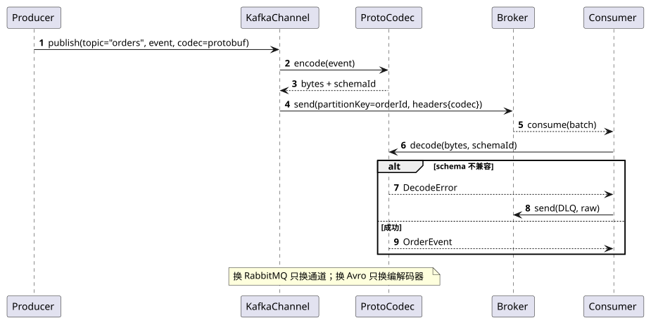

图形库要支持圆和方，还要支持矢量与位图两种渲染。按“形状+渲染器”建子类会得到 VectorCircle、BitmapCircle……每加一维就翻倍。桥接把两维拆开：形状只管几何，渲染器只管画，中间连一条引用。
坏写法是把渲染方式写进形状：
void draw_circle_vector(...);
void draw_circle_bitmap(...);
void draw_square_vector(...);
void draw_square_bitmap(...);2 种形状 × 2 种渲染 = 4 个函数；再加三角形和 SVG，就是 3×3 = 9 个。增长是乘法。
桥接之后：形状持有“渲染器接口”，画的时候调 r->circle(size)。形状 2 种、渲染器 2 种，代码量是加法，组合数还是乘法但实现不用写满。
左边是形状，中间是渲染器引用，右边是两种渲染实现。
C 版渲染器是一张函数表，形状结构里放指针；C++ 版渲染器是抽象基类，形状用引用持有。
/* 桥接 · 形状 × 渲染器
* gcc -std=c11 -Wall -Wextra bridge.c -o bridge
*/
#include <stdio.h>
typedef struct renderer renderer_t;
struct renderer {
const char *name;
void (*circle)(renderer_t *, int);
void (*square)(renderer_t *, int);
};
typedef struct {
const char *name;
int size;
const renderer_t *r;
} shape_t;
static void shape_draw(const shape_t *s)
{
printf("[%s] %s size=%d -> ", s->r->name, s->name, s->size);
if (s->name[0] == 'C') s->r->circle((renderer_t *)s->r, s->size);
else s->r->square((renderer_t *)s->r, s->size);
}
static void vector_circle(renderer_t *r, int s) { (void)r; printf("矢量圆 r=%d\n", s); }
static void vector_square(renderer_t *r, int s) { (void)r; printf("矢量方 w=%d\n", s); }
static renderer_t VECTOR = { "矢量", vector_circle, vector_square };
static void raster_circle(renderer_t *r, int s) { (void)r; printf("位图圆 半径 %dpx\n", s); }
static void raster_square(renderer_t *r, int s) { (void)r; printf("位图方 边长 %dpx\n", s); }
static renderer_t RASTER = { "位图", raster_circle, raster_square };
int main(void)
{
shape_t shapes[] = {
{ "Circle", 5, &VECTOR },
{ "Square", 5, &VECTOR },
{ "Circle", 5, &RASTER },
{ "Square", 5, &RASTER },
};
for (unsigned i = 0; i < 4; i++) shape_draw(&shapes[i]);
printf("2 种形状 × 2 种渲染器 = 4 种组合，没有 4 个子类\n");
return 0;
}[矢量] Circle size=5 -> 矢量圆 r=5 [矢量] Square size=5 -> 矢量方 w=5 [位图] Circle size=5 -> 位图圆 半径 5px [位图] Square size=5 -> 位图方 边长 5px 2 种形状 × 2 种渲染器 = 4 种组合，没有 4 个子类
// 桥接 · 形状 × 渲染器
// g++ -std=c++17 -Wall -Wextra bridge.cpp -o bridge_cpp
#include <cstdio>
#include <memory>
#include <string>
class Renderer {
public:
virtual ~Renderer() = default;
virtual std::string name() const = 0;
virtual void circle(int size) const = 0;
virtual void square(int size) const = 0;
};
class VectorRenderer final : public Renderer {
public:
std::string name() const override { return "矢量"; }
void circle(int s) const override { std::printf("矢量圆 r=%d\n", s); }
void square(int s) const override { std::printf("矢量方 w=%d\n", s); }
};
class RasterRenderer final : public Renderer {
public:
std::string name() const override { return "位图"; }
void circle(int s) const override { std::printf("位图圆 半径 %dpx\n", s); }
void square(int s) const override { std::printf("位图方 边长 %dpx\n", s); }
};
class Shape {
public:
Shape(std::unique_ptr<Renderer> r, int size) : r_(std::move(r)), size_(size) {}
virtual ~Shape() = default;
virtual std::string name() const = 0;
void draw() const {
std::printf("[%s] %s size=%d -> ", r_->name().c_str(), name().c_str(), size_);
if (name() == "Circle") r_->circle(size_);
else r_->square(size_);
}
protected:
const Renderer& renderer() const { return *r_; }
int size() const { return size_; }
private:
std::unique_ptr<Renderer> r_;
int size_;
};
class Circle final : public Shape {
public:
Circle(std::unique_ptr<Renderer> r, int s) : Shape(std::move(r), s) {}
std::string name() const override { return "Circle"; }
};
class Square final : public Shape {
public:
Square(std::unique_ptr<Renderer> r, int s) : Shape(std::move(r), s) {}
std::string name() const override { return "Square"; }
};
int main()
{
Circle v1(std::make_unique<VectorRenderer>(), 5); v1.draw();
Square v2(std::make_unique<VectorRenderer>(), 5); v2.draw();
Circle r1(std::make_unique<RasterRenderer>(), 5); r1.draw();
Square r2(std::make_unique<RasterRenderer>(), 5); r2.draw();
std::puts("2 种形状 × 2 种渲染器 = 4 种组合，没有 4 个子类");
return 0;
}[矢量] Circle size=5 -> 矢量圆 r=5 [矢量] Square size=5 -> 矢量方 w=5 [位图] Circle size=5 -> 位图圆 半径 5px [位图] Square size=5 -> 位图方 边长 5px 2 种形状 × 2 种渲染器 = 4 种组合，没有 4 个子类
| 角色 | C 版 | C++ 版 | 差别意味着什么 |
|---|---|---|---|
| 渲染器怎么表示 | 函数表指针 | 抽象基类引用 | C 的渲染器是数据，C++ 是类型 |
| 形状持有什么 | const renderer_t * | Renderer& | 都只持一条引用 |
| 换渲染器 | 换指针 | 换引用 | 形状对象不用重建 |
| 扩展新维度 | 加一种形状或一种渲染器 | 同左 | 两边各自加，不交叉 |
参考教程：refactoringguru.cn
VectorCircle 这种命名，桥接就白做了。生产实例：消息平台 × 序列化协议
消息平台要支持 Kafka 和 RabbitMQ，还要支持 JSON 与 Protobuf。按“通道+协议”建子类就是四种实现，再加 Pulsar 或 Avro 立刻翻倍。桥接把两维拆开：通道只管收发，编解码器只管字节，生产者持有“通道 + 编解码器”两个引用。

@startuml
autonumber
participant "Producer" as P
participant "KafkaChannel" as K
participant "ProtoCodec" as C
participant "Broker" as B
participant "Consumer" as S
P -> K: publish(topic="orders", event, codec=protobuf)
K -> C: encode(event)
C --> K: bytes + schemaId
K -> B: send(partitionKey=orderId, headers{codec})
B --> S: consume(batch)
S -> C: decode(bytes, schemaId)
alt schema 不兼容
C --> S: DecodeError
S -> B: send(DLQ, raw)
else 成功
C --> S: OrderEvent
end
note over K,C: 换 RabbitMQ 只换通道；换 Avro 只换编解码器
@enduml